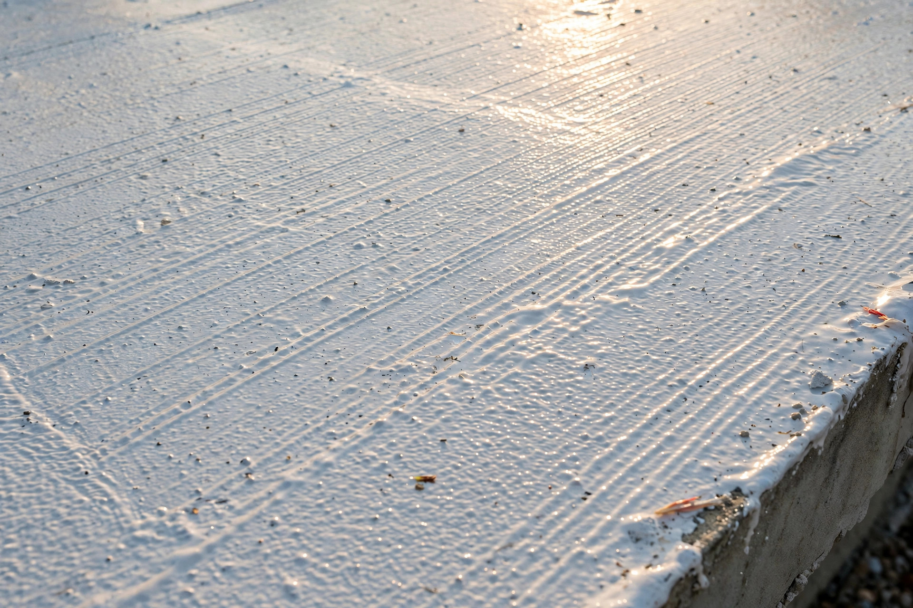
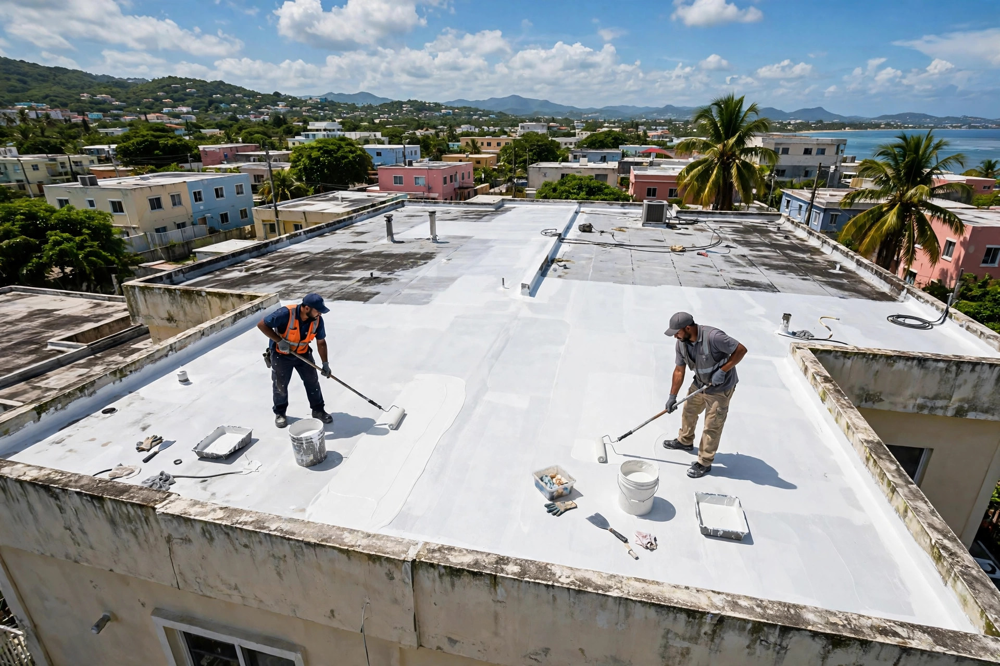
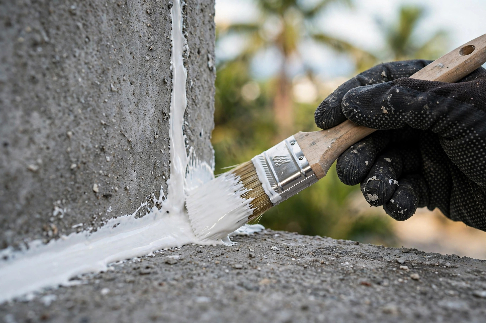

27 años sellando confianza
Colon Waterproofing Inc: sellado de techos en Trujillo Alto con 27 años de experiencia. Estimados gratis. Llama o escribe por WhatsApp.
Resultados reales
Cada foto es un trabajo real de sellado e impermeabilización. Toca cualquier foto para verla grande.



Desliza para ver los 3 trabajos · toca una foto para ampliarla
Lo que hacemos
Protegemos tu techo del agua y el sol con sistemas profesionales y detalle de oficio.
Sellado profesional con 27 años de oficio: preparación, detalle y sistema completo.
SelladoDiagnosticamos de dónde viene la filtración, la reparamos y sellamos el techo.
ReparaciónVisitamos tu propiedad, evaluamos y te damos el estimado sin costo.
GratisMantenimiento para que tu sellado siga protegiendo año tras año.
CuidadoAsí de fácil
Escríbenos por WhatsApp con fotos de tu techo. Respuesta rápida, sin compromiso.
Visitamos tu propiedad, inspeccionamos el techo y te damos el estimado gratis.
Preparamos la superficie y aplicamos el sistema completo con detalle profesional.
Tu techo queda sellado contra el agua y el sol. Tranquilidad por años.
Quiénes somos
Colon Waterproofing Inc: sellado de techos en Trujillo Alto con 27 años de experiencia. Estimados gratis. Llama o escribe por WhatsApp.
Estimados gratis, trabajo con detalle y un solo objetivo: que tu techo quede sellado contra el agua y el sol por años.
Preguntas frecuentes
Sí. Visitamos tu propiedad en Trujillo Alto y el área metro, evaluamos el techo y te damos el estimado sin costo ni compromiso.
Más de 27 años sellando techos en Puerto Rico. Décadas de oficio que se notan en el acabado final.
Estamos en Trujillo Alto y servimos toda el área metro: Carolina, San Juan, Guaynabo y pueblos cercanos.
Con un buen trabajo y mantenimiento, un sellado protege tu techo por muchos años. En la visita te explicamos qué esperar según tu caso.
Sí. Primero diagnosticamos de dónde viene la filtración, la reparamos y luego aplicamos el sellado completo del techo.
Mira más trabajos en @colonwaterproofinginc.
Agenda tu estimado
Teléfono / WhatsApp
787-768-6094Cobertura
Trujillo Alto y el área metro
Llena esto y te abrimos WhatsApp con tu mensaje listo.
Estimado gratis: envíanos fotos o medidas de tu techo por WhatsApp y te respondemos sin compromiso.
Esta página la creó ManuPro. Escríbenos hoy mismo y cotiza la website profesional de tu negocio.
Cotizar por WhatsApp